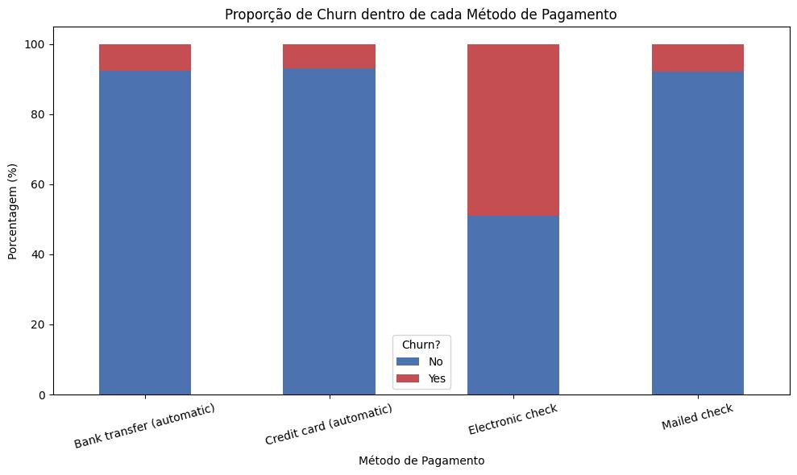
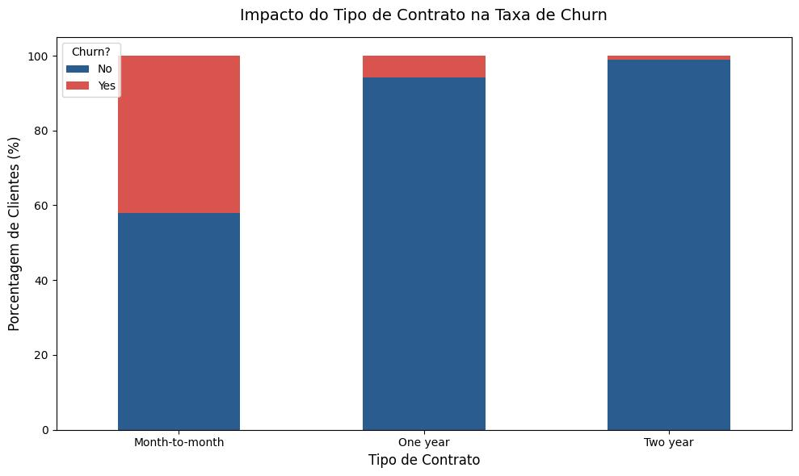
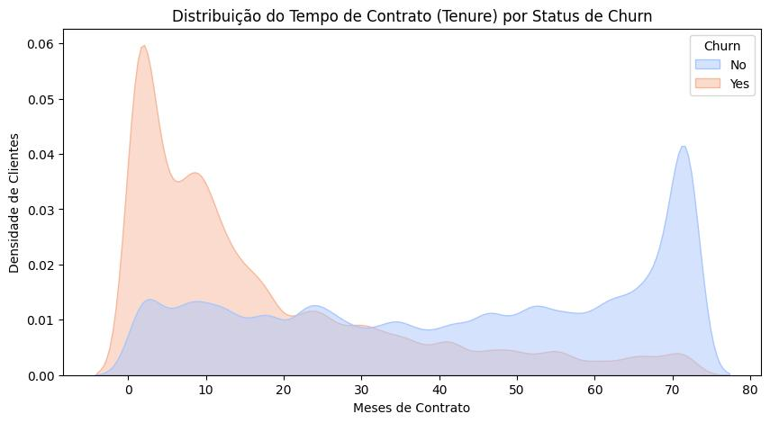
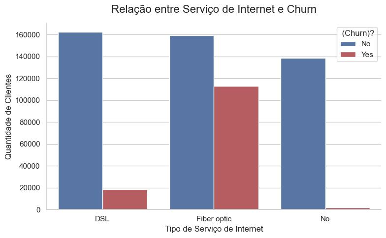
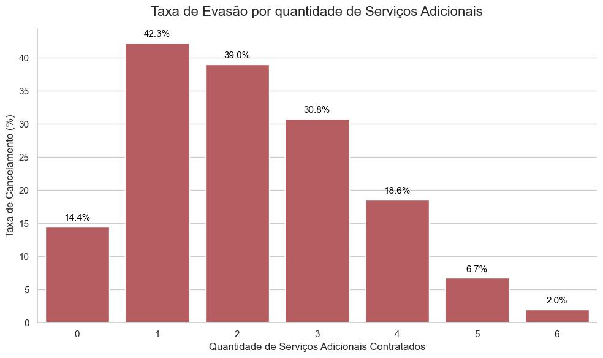
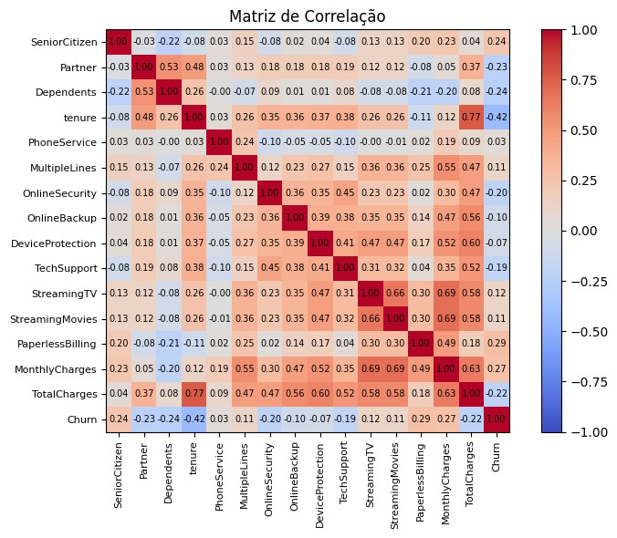
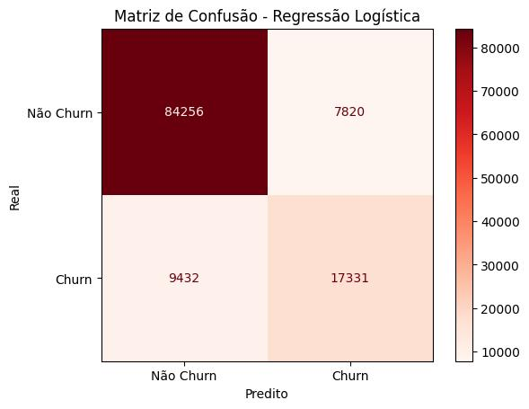
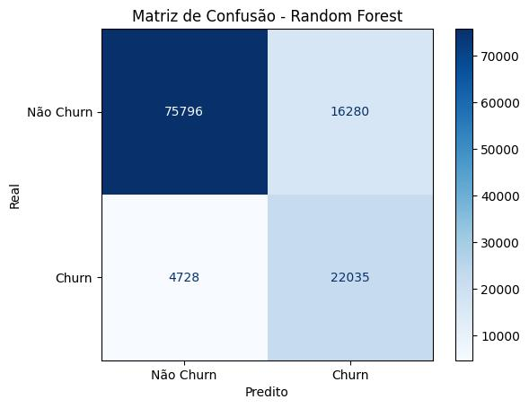
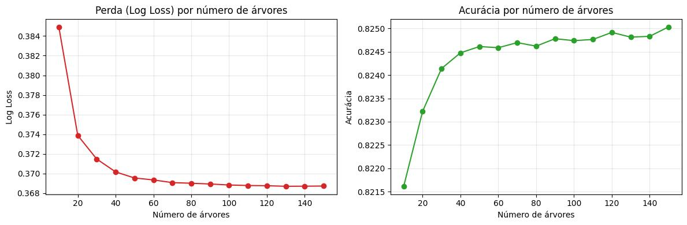

O Cenário da Empresa A operadora de telecomunicações enfrenta um dos maiores inimigos da lucratividade moderna: a perda constante de receita através da evasão de clientes (o famoso Churn).
A Missão da RET Consultoria Nossa equipe foi contratada para encontrar o padrão escondido nesses cancelamentos. O nosso objetivo é usar a inteligência dos dados para identificar clientes com alto risco de saída e ajudar a diretoria a desenvolver estratégias preditivas de retenção.
Para resolver o problema de negócio e estancar a perda de clientes, a diretoria nos exigiu respostas claras para seis perguntas centrais:
O que vamos investigar?
Qualidade e Estrutura do Conjunto de Dados
Nossas 21 variáveis estão divididas em 4 pilares principais:
Uma descrição estatística básica das variáveis numéricas do conjunto de dados é apresentada a seguir:
| id | SeniorCitizen | tenure | MonthlyCharges | TotalCharges | |
|---|---|---|---|---|---|
| count | 594194 | 594194 | 594194 | 594194 | 594194 |
| mean | 297096.5 | 0.114102 | 36.577258 | 65.866223 | 2494.377057 |
| std | 171529.177263 | 0.317936 | 25.061922 | 31.067444 | 2353.916710 |
| min | 0.0 | 0.0 | 1.0 | 18.25 | 18.8 |
| 25% | 148548.25 | 0.0 | 12.0 | 29.9 | 639.65 |
| 50% | 297096.5 | 0.0 | 35.0 | 74.1 | 1433.65 |
| 75% | 445644.75 | 0.0 | 62.0 | 90.8 | 4263.8 |
| max | 594193.0 | 1.0 | 72.0 | 118.75 | 8684.8 |
Principais Insights da Distribuição:
Demografia: A variável SeniorCitizen (binária) apresenta média de 0.11, indicando que a nossa base é predominantemente jovem/adulta, com idosos representando apenas 11,4% dos clientes.
Retenção (Tenure): Apresenta grande dispersão (desvio padrão de 25 meses para um máximo de 72). A mediana de 35 meses e a média de 36 meses sugerem uma distribuição razoavelmente equilibrada entre clientes novos e antigos.
Comportamento Financeiro: * MonthlyCharges: Mostra variação considerável, refletindo a diversidade de pacotes (de básicos a premium).
TotalCharges: Apresenta forte assimetria. A média (2.494) é muito superior à mediana (1.433), indicando que a maior concentração de clientes possui custos totais mais baixos, enquanto uma minoria com alto valor acumulado eleva a média.A base é perfeitamente equilibrada, com aproximadamente 50% de clientes do gênero masculino e 50% do feminino.
Associação Irrelevante: O teste estatístico revelou uma associação de apenas 0,0068 entre gênero e evasão.
Insight de Negócio: O gênero do cliente não influencia a propensão ao Churn. Estratégias de retenção devem desconsiderar distinções de gênero.
| Gênero | quantidade | porcentagem |
|---|---|---|
| Feminino | 298738 | 50.276172 |
| Masculino | 295456 | 49.723828 |

O método de pagamento com maior percentual de churn nesta operação é o Cheque Eletrônico, tendo quase 50% das operações consolidadas em “Yes”.

Graficamente temos um reforço para a conclusão, há uma associação entre o tipo de contrato e churn e, de forma mais especifica, a modalidade month-to-month é a que detem a maior quantidade de churn. Com um percentual um pouco maior que 40%.

O risco de perda de clientes é crítico no início da jornada. A empresa precisa focar urgentemente em estratégias de retenção para novos clientes nos primeiros meses. Se o cliente ultrapassar essa barreira inicial, a probabilidade de ele se tornar um cliente fiel a longo prazo é muito alta.

Dentre todos os serviços ofertados pela empresa, o de fibra óptica é o que contém a maior parcela de evasão. Apresentou uma associação de 0,4259.

Quanto maior a quantidade de serviços associadas ao cliente, menor a taxa de Churn.A partir da análise descritiva, conseguimos mapear os dois extremos comportamentais da nossa base de clientes:

Como podemos ver no mapa, o tempo de casa (Tenure: -0.42) protege a empresa. Por outro lado, faturas mais altas e cobranças digitais (0.29 e 0.27) acendem um alerta para o risco de cancelamento.
A fase de modelagem é onde vamos buscar algoritmos clássicos de classificação que captem e expliquem bem a variabilidade dos dados e prevejam a evasão do cliente.
Dividimos os nossos dados:
Logistic Regression (Modelo paramétrico logístico)
Random Forest (Modelo baseado em árvores de decisão e ensemble)
Métricas Globais de Avaliação

Análise de Risco (Matriz de Confusão):
Falsos Positivos: Clientes leais classificados como evasão. O modelo demonstra uma leve inclinação conservadora, preferindo errar por cautela.
Falsos Negativos: O volume de “cancelamentos” foi drasticamente reduzido com o tratamento adequado das variáveis. A empresa agora possui um radar antecipado altamente eficaz.
Métricas e Estratégia de Retenção

Matriz de Confusão
Falsos Negativos (Apenas 4.728): Reduzimos drasticamente o pior risco de negócio.
Falsos Positivos (16.280): Clientes leais classificados como evasão. O modelo é altamente sensível, preferindo pecar pelo excesso de cautela (oferecer uma ação de retenção a quem não ia cancelar) do que perder o cliente
Para garantir que o resultado não foi “obra do acaso”, a testamos o limite matemático do modelo simulando o crescimento da floresta até 150 árvores.

Prevenção de Overfitting: As linhas provam que o modelo atinge a maturidade e estabiliza seu aprendizado (Acurácia e Log Loss).
Eficiência: Comprovamos que encontramos o ponto exato onde o erro matemático para de cair, entregando à empresa um modelo estatisticamente sólido, leve e pronto para ser executado todo mês.
Ao invés de eleger um único “vencedor”, nossa recomendação é usar os dois algoritmos em conjunto, pois eles resolvem problemas diferentes da empresa:
📊 Regressão Logística (Foco na Estratégia): Com 85.5% de acurácia, ele é o nosso modelo transparente. Ele nos provou matematicamente o que faz o cliente ir embora (contratos mensais e fibra óptica). É a ferramenta perfeita para a diretoria repensar os produtos da empresa.
🌲 Random Forest (Foco na Operação): Com um Recall altíssimo (82.3%), ele atua como nosso “cão de guarda”. Ele aceita errar um pouco mais nos Falsos Positivos só para ter certeza de que quase nenhum cancelamento passe batido. É ideal para o uso diário da equipe de atendimento.
Com base nos dados, o que a empresa pode fazer para reduzir a perda de clientes?
1. Mudar a forma de vender a Fibra Óptica: Vender a internet de fibra isolada (sem outros serviços) provou ser um risco enorme. A empresa precisa criar combos com descontos agressivos para incentivar a assinatura de 3 ou mais serviços, “amarrando” o cliente.
2. Fugir do Contrato Mensal: É o formato que mais gera evasão. Sugerimos subsidiar a primeira mensalidade ou dar bônus para convencer o cliente a fechar o plano Anual logo no primeiro contato.
3. Ligar para a pessoa certa (Radar de Churn): Colocar o Random Forest para rodar no sistema da empresa. Em vez da equipe de retenção tentar adivinhar quem vai cancelar, eles vão oferecer descontos preventivos apenas para a lista vermelha gerada pelo modelo todo mês.
Equipe de Consultoria Estatística: * [Eloísa da Silva Costa] * [Richard Matheus Avelino da Silva] * [Túlio Herculano Silva Lima]